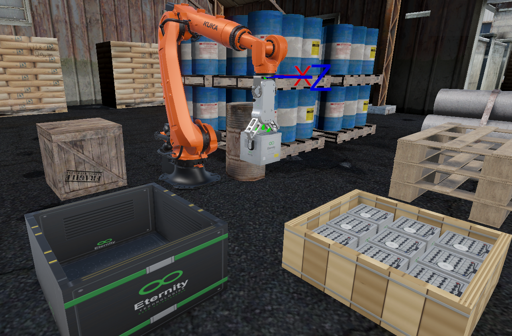
La empresa AUTOELEC arma paquetes de baterías de plomo-ácido para autoelevadores industriales: cada vaso se ubica a mano dentro de un rack metálico.
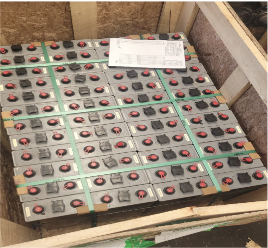
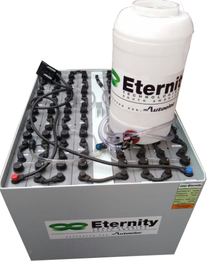
Desgaste prematuro en la salud del personal y riesgo concreto de accidente durante la operación.
Sustituir el esfuerzo humano por un brazo robótico teleoperado, y entrenar al operario en un entorno virtual antes de llevarlo al equipo real.
Durante la fase de aprendizaje existe riesgo de colisiones con el rack, caída de vasos y golpes al operador — y la destreza inicial varía mucho entre personas.
Se aprende sobre una réplica virtual: no se daña el equipo ni se lastima el operador.
Desaparecen los materiales dañados y las paradas de producción no planificadas.
Otras secuencias, cargas o restricciones sin ninguna intervención física.
Tiempo por tarea, colisiones, operaciones completadas y masa manipulada, instrumentados automáticamente.
El mismo joystick físico del entrenamiento opera el robot real: los patrones aprendidos se transfieren directo.
El punto 05 es la clave del diseño: no se entrena con un mando genérico y después se cambia de interfaz — se entrena con exactamente el mismo hardware con el que se va a trabajar.
Desarrollar un entorno VR y un esquema de control que permitan entrenar y luego teleoperar un brazo robótico mediante un joystick propio, priorizando seguridad, usabilidad y desempeño.
Del potenciómetro del joystick al ángulo articular — y de vuelta al operador por vibración, más una rama de monitoreo hacia clientes externos.
Al presentarse como gamepad estándar, el sistema operativo y el Input System de Unity lo reconocen sin drivers ni código de inicialización. Verificado con Gamepad Tester: el dispositivo se identifica como cafe-4004-Joystick VR.
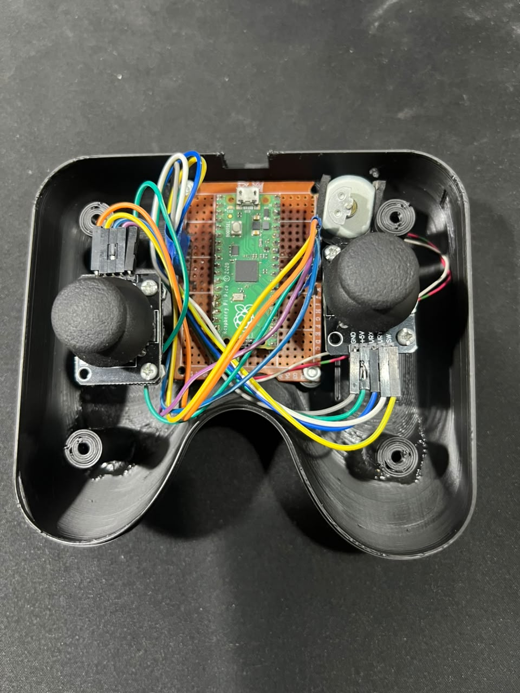
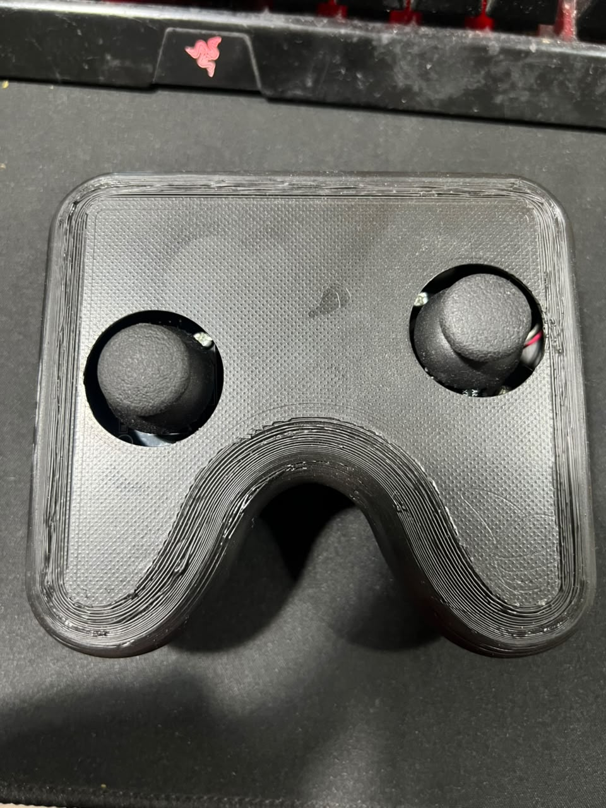
Además de leer ejes, el firmware recibe comandos de vibración desde Unity por la misma interfaz USB HID.
Camino principal: Win32 sobre hid.dll y setupapi.dll — CreateFile / WriteFile / HidD_SetOutputReport, localizando el dispositivo por VID/PID.
En paralelo, si hay un DualShockGamepad conectado, se replica el estado del motor como rumble nativo con SetMotorSpeeds.
Permite sustituir el joystick propio por un control PS4 durante sesiones de prueba, sin tener el hardware a mano.
Flange recibe ángulos articulares en grados, no torques físicos de Unity Physics. El brazo nunca se mueve por Rigidbody, fuerzas ni impulsos.
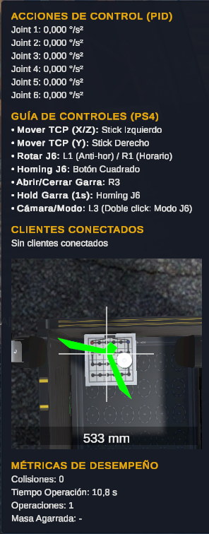
Acción de control en °/s² calculada por el controlador PID de cada articulación J1–J6, en tiempo real.
Mapeo de botones y palancas del joystick, siempre a la vista como referencia inmediata del operador.
Colisiones, tiempo de operación, operaciones completadas y masa agarrada.
Sub-ventana con la vista en tiempo real desde una cámara montada sobre el efector, que facilita el posicionamiento preciso de la garra sobre las celdas. La lectura grande es la distancia al objetivo.
Las acciones se definen en Input Action Assets: RobotBasic.inputactions para el joystick propio VR-2 y PS4Joystick.inputactions para el gamepad PlayStation 4.
| Acción | VR-2 (propio) | PS4 | Uso |
|---|---|---|---|
| MoveX / MoveZ | Palanca principal | Stick izq. | Traslación lateral y frontal del TCP |
| MoveY | Palanca de altura | Stick der. (vert.) | Traslación vertical del TCP |
| Gripper | Trigger izq. | R3 | Clic: abre/cierra · 1 s: homing de J6 |
| ModoCamara | Pulsador der. | L3 | Clic: Robot/Cámara · doble: modo J6 · 2 s: pausa |
| J6AntiHor / J6Hor | gesto circular | L1 / R1 | Giro de J6 a velocidad constante |
| J6Home | — | Cuadrado | Retorno de J6 a su referencia física |
| Selector / Click | Palancas + pulsador | Cruceta + Cruz | Navegación y confirmación del menú |
IsCameraMode = false — los analógicos mueven el Tool Center Point en el espacio cartesiano.
IsCameraMode = true — los mismos analógicos controlan posición y orientación de la cámara principal, estilo first-person.
Doble clic: la muñeca gira aislada, con un límite de velocidad propio de ±45 °/s.
Al ser IsCameraMode una propiedad estática de JoystickAdapter, el componente CameraJoystickController la consulta sin necesitar una referencia explícita entre objetos.
Si el operador navega libremente en modo Cámara y luego retoma el robot, la dirección «al frente» del punto de vista ya no coincide con ningún eje del mundo.
Empujar el analógico hacia adelante siempre mueve el TCP en la dirección que apunta hacia él desde la cámara; empujarlo a la derecha lo desplaza a su derecha geométrica — con independencia de la orientación del efector o de dónde esté la cámara.
Implementado en JoystickAdapter.RemapAxesFromCamera().
En cada FixedUpdate, JoystickAdapter construye el incremento de posición del TCP en espacio mundo.
uX, uY, uZValores de las acciones MoveX/Y/Z, en el rango [−1, 1].
v — velocidad máximaConfigurada en el Inspector. Los versores d̂X y d̂Z vienen del remapeo geométrico.
λpayload ∈ (0, 1]Penalización proporcional a la masa agarrada. Produce el efecto perceptible de «carga pesada = movimiento más lento».
λprox ∈ [0.5, 1]Frenado progresivo por proximidad a obstáculos. Nunca llega a cero.
JointTarget.IsValid == false, no se fuerza el movimiento.e[k] = Mathf.DeltaAngle(qactual, qtarget)q̇medida = DeltaAngle(qprevio, qactual) / Δt| Aceleración angular | ±720 °/s² |
| Velocidad articular | ±60 °/s |
| J6 en modo exclusivo | ±45 °/s |
| Amortiguamiento viscoso | 1 s⁻¹ |
| Piso de inercia normalizada | 5 % |
La posición articular se recorta contra los límites físicos de cada eje. Si un límite se alcanza, la velocidad se frena a cero y el integrador del PID correspondiente se reinicia, para evitar windup.
El resultado final se aplica con MechanicalGroup.SetJoints(), siempre como ángulos articulares en grados.
El torque del PID se convierte en aceleración angular ponderada por la inercia efectiva del eslabón, calculada en RobotDynamics.ComputeEffectiveInertia().
Si el gripper sostiene algo, se suman GrabbedMass y GrabbedWorldPosition a la Jeff de cada articulación, como masa puntual ubicada en el graspPoint.
RobotDynamics.Links
| Eslabón | Masa | Proporción |
|---|---|---|
| link_1 | 138 kg | |
| link_2 | 95 kg | |
| link_3 | 71 kg | |
| link_4 | 17 kg | |
| link_5 | 7 kg | |
| link_6 | 0.5 kg |
Masas y centros de masa tomados del modelo URDF del curso Robotics Nanodegree (RoboND) de Udacity, con cada CoM expresado en el espacio local de su TransformJoint.
Efecto en VR: mover J1 (que arrastra 328 kg de eslabones distales) se siente pesado y lento; mover J6 (0.5 kg) responde al instante. Esa diferencia es lo que hace creíble la simulación.
A medida que la distancia cae bajo ThresholdMeters (30 cm), la velocidad cartesiana se interpola linealmente hasta un piso de 50 % — en cualquier dirección, y sin llegar nunca a cero.
ApplyDescentLimit() — bloqueo estricto que solo actúa al descender con la garra cerrada: recorta el paso vertical al margen restante (5 cm), deteniendo el descenso justo sobre la superficie.
ApplyCollisionVeto() traza un SphereCastNonAlloc desde el efector a lo largo de la dirección de movimiento contra el layer Entorno, y recorta el paso antes del contacto. Ignora el propio robot, la pieza agarrada y las superficies muy horizontales.
Ambos umbrales son ajustables en tiempo real desde el menú de pausa, ciclando entre presets, y se persisten entre sesiones en PlayerPrefs.
Tools > Entorno > Generar colliders faltantes; sin ese paso el veto queda sin efecto.La apertura y cierre del OnRobot RG2 se controla con un único botón, gestionado por Ctrl_OnRobotRG2_Custom.
La carrera (stroke, 0–100 mm) se convierte a ángulo de servo con un polinomio de ajuste (Polyval) y se interpola con Mathf.MoveTowards, rotando los seis Rigidbody de los dedos vía MoveRotation.
Un objeto solo se agarra si existe una ventana de cierre explícita (isClosing) y el objeto registra contacto simultáneo de ambos dedos (HasOpposingInnerContacts()).
Tocar un objeto con la garra ya cerrada nunca lo adhiere.
Cada dedo lleva un forwarder en su cara interna que detecta por trigger los objetos con tag "Agarrable", recorriendo la jerarquía de Transform hacia arriba desde el colisionador detectado, y notifica a NotifyFingerContact().
Rigidbody del objeto.Rigidbody del gripper.graspPoint: movimiento 1:1 sin deslizamientos.Se restauran masa y físicas. MoveGrabbedObjectToSafeReleaseHeight() corrige la posición si la suelta ocurriera por debajo del piso o de la altura mínima de recogida.
Mantener el botón 1 segundo no cierra la garra: dispara el homing de J6 a su cero físico de 17.7° (JoystickAdapter.ResetJ6ToZero()) — la misma acción del botón Cuadrado.
Un rayo con grosor de 0.01 m trazado sobre un único eje. Exige una lectura puntual y precisa justo debajo del gripper.
IsGripDistanceSafe, entre 0.01 y 0.05 m)Sensor_Distancia_Derecho / Izquierdo / Frontal / Trasero. Muestreo con Physics.OverlapSphereNonAlloc que promedia sobre un área en lugar de un único punto.
No participan del frenado ni del HUD. Su única función es disparar el motor háptico ante un obstáculo cercano en su dirección, como aviso temprano de colisión lateral durante el traslado del TCP.
vibrationStartDistanceLa histéresis evita el parpadeo del motor cuando la distancia oscila alrededor del umbral. Los cinco sensores actúan de forma independiente: cualquiera puede activar la vibración vía JoystickVibrationHidOutput.SetMotor(true). Solo opera cuando no hay ningún objeto agarrado.
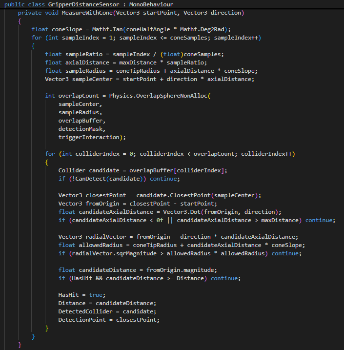
MeasureWithCone() — muestreo cónico usado por los cuatro sensores laterales.GripperTopCameraFollow) complementa esto: sigue al efector desde arriba, mirando siempre hacia abajo, con el vector up proyectado desde el forward del efector — así la vista gira solidariamente con J6.A diferencia de un esquema de destino fijo, Unity mantiene una lista de suscriptores activos: cualquier cliente que envíe "HELLO" queda registrado y empieza a recibir el estado articular.
Python, MATLAB y un dashboard web operan simultáneamente sin tocar el servidor.
_autoCleanupEnabled (desactivado por defecto) elimina suscriptores tras 15 s sin keep-alive.
CultureInfo.InvariantCultureFuerza el punto decimal en la serialización, evitando conflictos con la configuración regional del SO.
InvariantCulture parece menor pero es el clásico bug que rompe la interoperabilidad: en configuración regional española, un float se serializa con coma y el parser del cliente lo corta mal. El HUD tiene un panel "Clientes conectados" que lista las IPs suscriptas en vivo.Comparten el mismo protocolo de suscripción y reutilizan la misma tabla de parámetros DH y la misma fórmula de calibración mecánica (JointConfig.Offset / Factor).
udp_joint_receiver.py — pide IP y puerto, envía el HELLO inicial y mantiene un hilo de keep-alive cada 5 s. Valida que cada paquete traiga exactamente 6 campos numéricos.
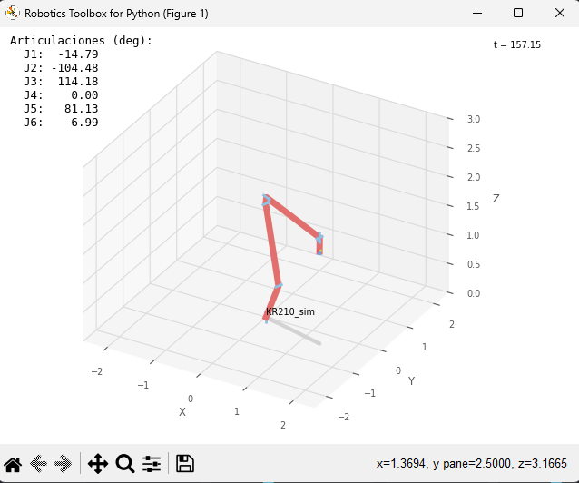
udp_robot_viewer.py con Robotics Toolbox (backend pyplot).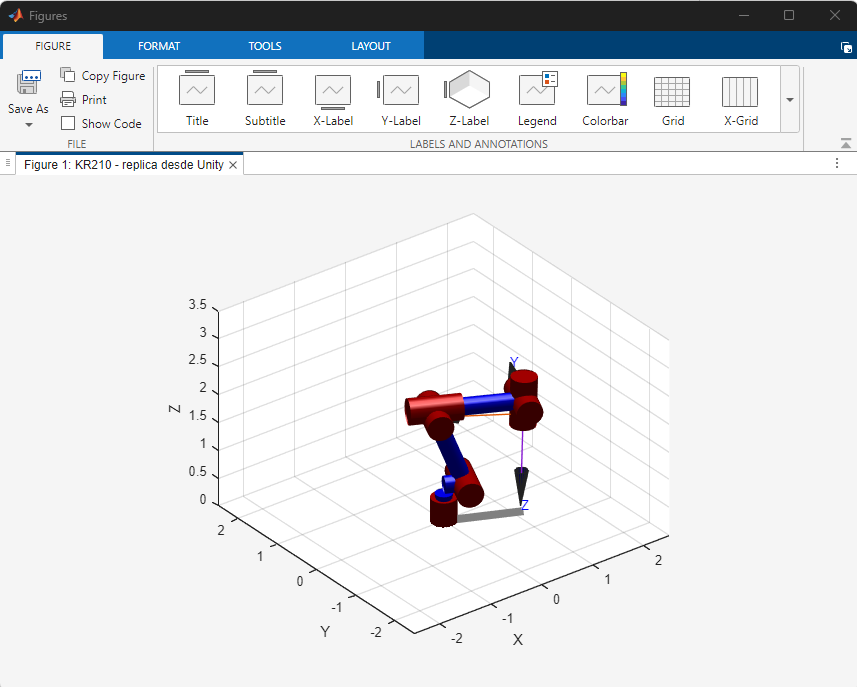
robot_udp_plot.m anima el KR210 con SerialLink de Peter Corke.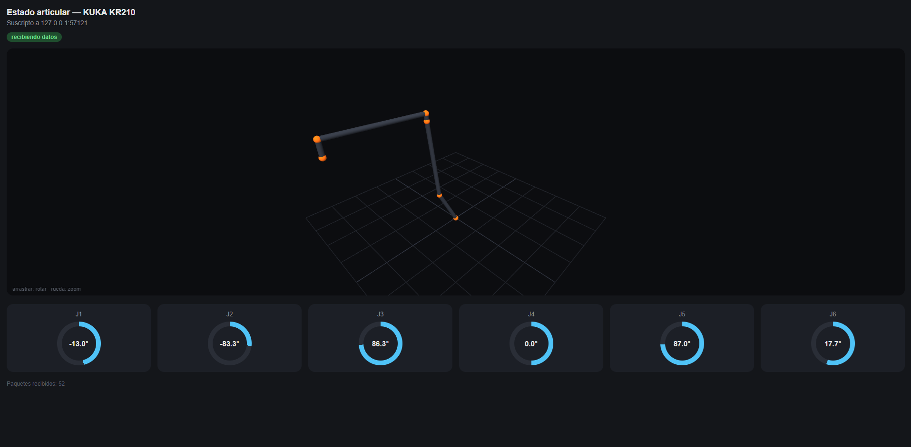
pyplot y no SwiftEl backend Swift (three.js) exige geometría STL/URDF. El modelo puramente cinemático (DHRobot) solo es graficable con pyplot, que dibuja el robot como stick figure desde la cinemática directa — igual que MATLAB.
Ambos visores vacían el buffer de recepción en cada ciclo y procesan solo el paquete más reciente, para evitar el lag acumulado.
La misma aplicación se ejecuta local en la PC o se sirve al teléfono por Tailscale, con la vista 3D y los gauges en formato vertical.
El objetivo declarado en la introducción —evaluar el desempeño con indicadores objetivos— se cierra acá.
PerformanceMetricsTrackerObserva las transiciones de GripperController.IsHoldingObject: al agarrar arranca un cronómetro y, al soltar, calcula la duración y suma un contador de operaciones completadas.
GripperCollisionCounterDetecta contactos por trigger contra cualquier objeto sin el tag "Agarrable", deduplicando por objeto para no contar dos veces un mismo contacto sostenido por varios colliders, e ignorando al propio robot con un Ignore Root configurable.
El Rigidbody del gripper es cinemático y los obstáculos del entorno normalmente no tienen Rigidbody. Para esa combinación Unity no garantiza que se dispare OnCollisionEnter — así que contar por colisión sólida perdería eventos.
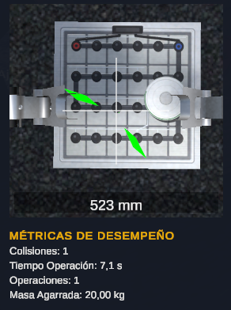
PerformanceMetricsPanel, con el mismo patrón de clonado de fila plantilla que usan los paneles de Acciones de Control y Guía de Controles.Caja de batería, cajón de madera y rack Eternity se generan con un pipeline reproducible de dos etapas.
Un script por prop (Pillow + NumPy) genera un atlas 2×2 de albedo y su mapa de normales, con cada celda mapeada a una cara distinta del objeto.
Construye un mesh con UV por cara mapeadas exactamente a esas celdas — a diferencia del Cube nativo de Unity, que manda las seis caras al mismo cuadrado UV 0..1— y lo aplica junto al material.
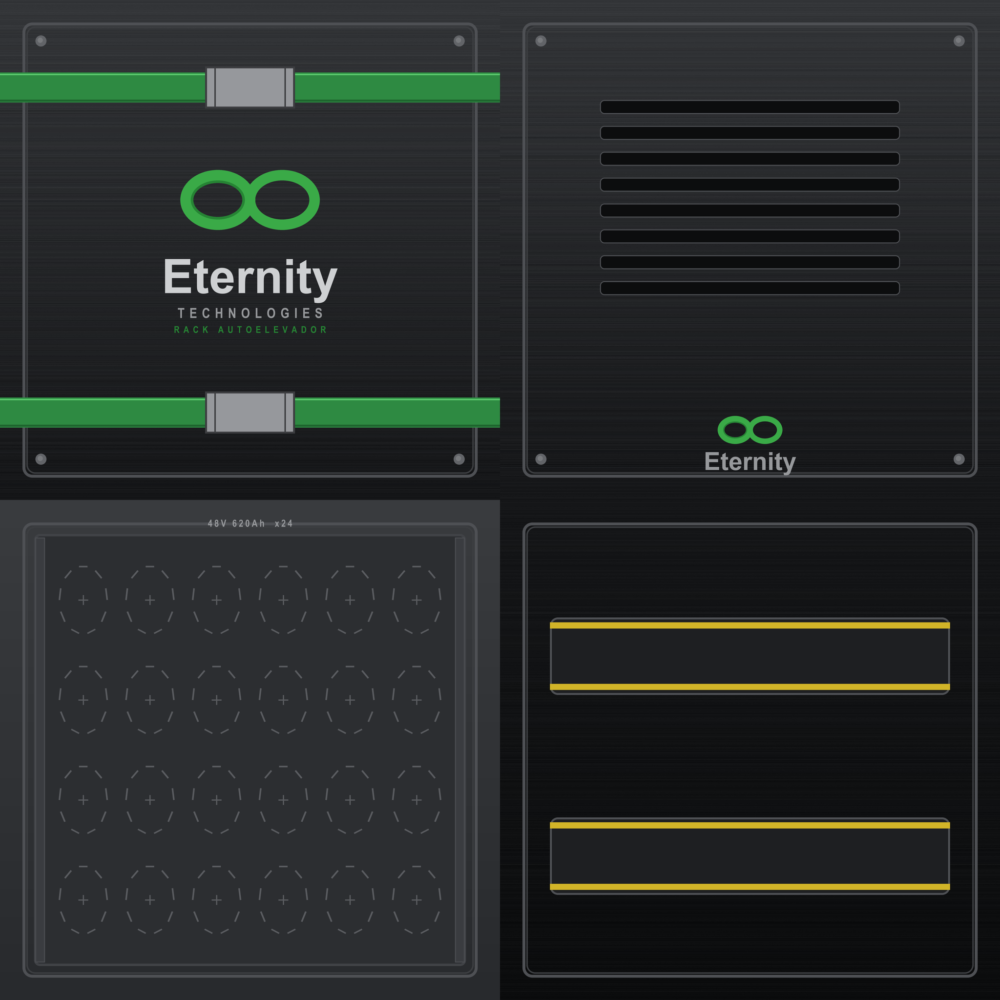
Para el cajón y el rack —que necesitan un hueco interior donde apoyar o extraer las celdas— el mesh es una bandeja: piso, cuatro paredes exteriores, borde superior, cuatro paredes interiores y piso interior.
La herramienta reemplaza los colliders por cinco BoxCollider (piso + cuatro paredes) que respetan el hueco. Un BoxCollider sólido de Cube nativo impediría que las celdas se apoyen o se extraigan del interior.
Cada herramienta ofrece dos entradas de menú: «Generar mesh y aplicar», que busca en la escena todos los objetos que ya usan el material del prop; y «Aplicar a la selección», útil para instancias nuevas.
El sistema cumple el objetivo planteado: un operario puede aprender a teleoperar el manipulador sin riesgo, con el mismo mando que usará en planta, y su desempeño puede medirse objetivamente durante todo el entrenamiento.
Entrenamiento en entorno virtual para la teleoperación segura de brazos robóticos
../Img/.